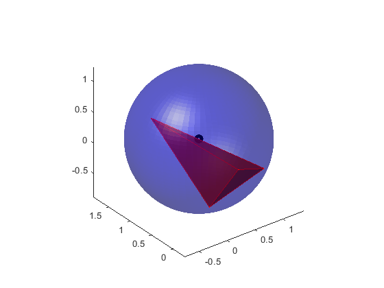

tetrahedron_circumsphere
Function to compute the centre and the radius of the sphere circumscribed to a given tetrahedron.
Author & support : nicolas.douillet (at) free.fr, 2017-2022.
Contents
Syntax
C = tetrahedron_circumsphere(V);
[C, r] = tetrahedron_circumsphere(V);
Description
C = tetrahedron_circumsphere(V) computes coordinates of C, which is the centre of the circumscribed sphere to the tetrahedron V.
[C, r] = tetrahedron_circumsphere(V) also returns the radius of the circumscribed sphere.
See also
| triangle_circumcircle | point_to_plane_distance |
Input argument
[V1x V2x V3x V4x]
- V = [V1y V2y V3y V4y], real matrix double, the tetrahedron vertex XYZ coordinates. Size(V) = [3,4].
[V1z V2z V3z V4z]Output arguments
[Cx]
C = [Cy], real column vector double, the circumscribed centre XYZ coordinates.
[Cz]- radius : real scalar double, the radius of the circumscribed sphere.
Example #1
Random tetrahedron
V = 2*(rand(3,4)-0.5); [C, radius] = tetrahedron_circumsphere(V); [Sx,Sy,Sz] = sphere(60); figure; set(gcf,'Color',[0 0 0]); plot3(C(1,1),C(2,1),C(3,1),'ro','Linewidth',5), hold on; couples = combnk(1:4,2); for k = 1:size(couples,1) line(V(1,couples(k,:)),V(2,couples(k,:)),V(3,couples(k,:)), 'Color', [0 0 1], 'Linewidth',2), hold on; end surf(radius*Sx+C(1,1),radius*Sy+C(2,1),radius*Sz+C(3,1)), shading interp, set(gca,'Color',[0 0 0],'XColor',[1 1 1],'YColor',[1 1 1],'ZColor',[1 1 1],'FontSize',16); colormap([0 1 1]); alpha(0.3); camlight left; axis equal, axis tight;
Example #2
Flat tetrahedron
V1 = [2*sqrt(2)/3 0 -1/3]; V2 = [-sqrt(2)/3 sqrt(6)/3 -1/3]; V3 = [-sqrt(2)/3 -sqrt(6)/3 -1/3]; V4 = [0 0 -1/3]; V = [V1' V2' V3' V4']; [C, radius] = tetrahedron_circumsphere(V);
Warning: Input tetrahedron is flat -coplanar vertices-. Circumscribed centre and radius are rejected to infinity.